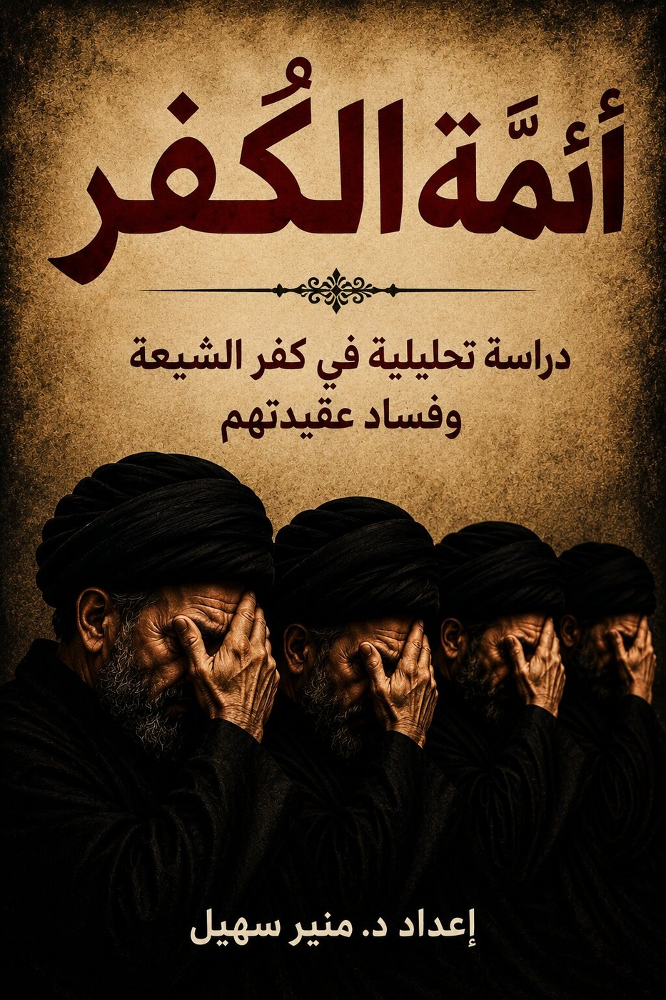
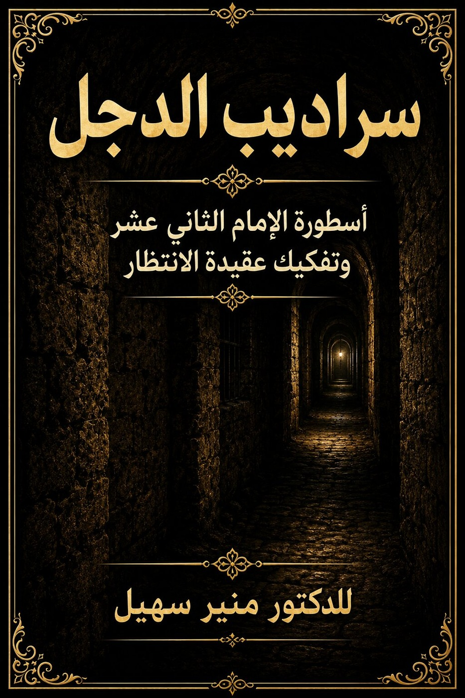

أئمة الكفر
دراسة تحليلية تتناول بالنقد والتحليل عقائد الشيعة الإمامية ومصادرها الأصلية.
شراء الكتابثلاثة مجلدات مترابطة في دراسة العقيدة والفكر والتاريخ الإسلامي، ضمن مشروع بحثي واحد يجمع بين العرض والتحليل والتوثيق.
استكشف الموسوعةتُعرض الموسوعة كهوية جامعة للمجلدات الثلاثة، حيث يقرأ الزائر كل كتاب منفردًا، ثم يختار شراء المجلد الذي يناسبه.

مرّر مؤشر الفأرة فوق الغلاف لقراءة الغلاف الخلفي. في الهاتف، اضغط على الغلاف مرة واحدة.

دراسة تحليلية تتناول بالنقد والتحليل عقائد الشيعة الإمامية ومصادرها الأصلية.
شراء الكتابدراسة نقدية معمقة لنظرية ولاية الفقيه وجذورها الفكرية والعقدية وآثارها السياسية.
شراء الكتاب
دراسة موسعة وموثقة حول عقيدة الإمام الثاني عشر والمهدي المنتظر في الفكر الإمامي.
شراء الكتابالاعتماد على المراجع والمصادر الأصلية.
قراءة موضوعية بعيدة عن السرد السطحي.
إحالة دقيقة للنقول والأفكار والمواقف.
طرح فكري موجّه لمن يريد الفهم والتحقيق.
وُلد منير سهيل في بيروت، لبنان، حيث تلقّى تعليمه الأولي والجامعي وتخرّج بدرجة البكالوريوس في علوم التجارة والاقتصاد من عائلة بيروتية عريقة ومثقفة.
إلى جانب دراسته الأكاديمية، تتلمذ على أيدي كبار علماء وقُرّاء بيروت في دراسة القرآن الكريم وعلوم الدين، مما شكّل أساسًا متينًا لاهتمامه بالفكر الإسلامي والدعوة.
انتقل بعد ذلك إلى المملكة العربية السعودية، حيث أمضى عشر سنوات متنقلاً بين مكة المكرمة والمدينة المنورة، تعمّق خلالها في دراسة المذاهب الإسلامية المختلفة، واطّلع على الفقه والتفسير.